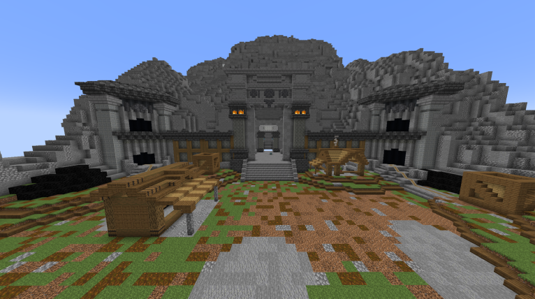

|  Witajcie,
Informujemy, że po wielu godzinach poważnych dyskusji postanowilśmy dodać nową lokalizacje, która ułatwi pozyskiwanie podstawowych materiałów.
Jest to kopalnia stworzona przez cywilizację zamieszkującą planetę "Ejvaer", niestety aby dostać się do obiektu niezbędna będzie podróż kosmiczną taxówką bądź własnym statkiem.
W kopalni czycha wiele niebezpieczeństw oraz skarbów.
Kopalnie możesz odblokować przechodząc pierwszą misje "Atak na księżyc" a następne poziomy obiektu możesz odblokować wykonując proste zadania.
Miłego kopania! |